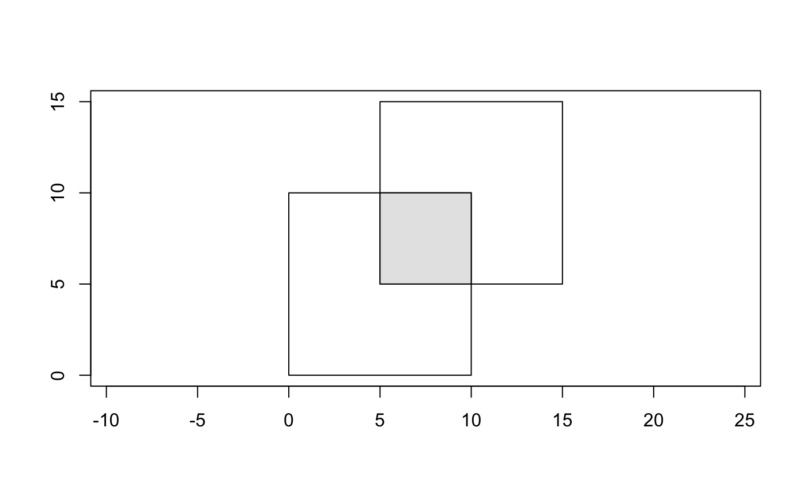
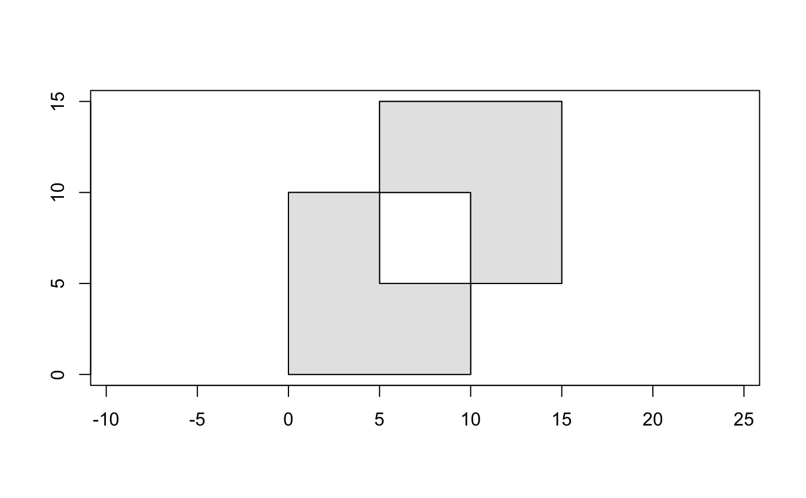
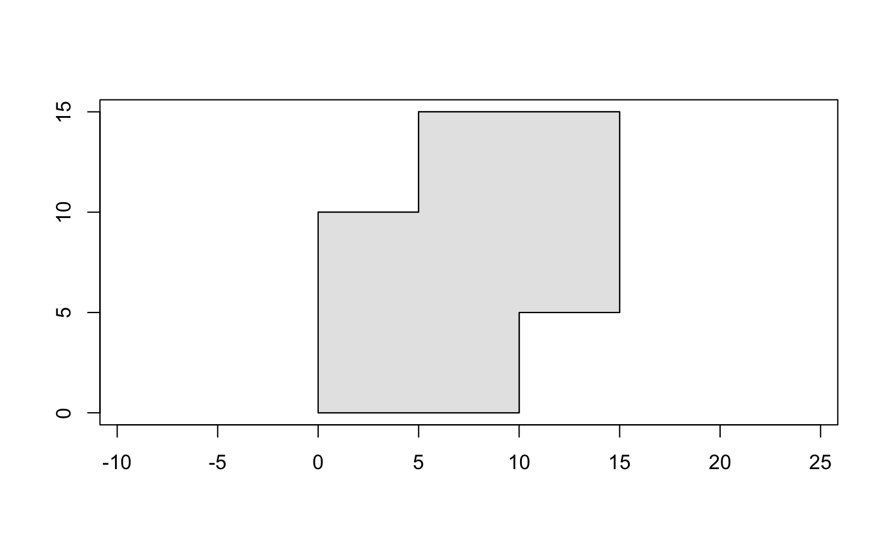

geos_intersection()returns the set of points common to bothxandy.geos_difference()returns the set of points fromxthat are not contained byy.geos_sym_difference()returns the set of points that are not common toxandy.geos_union()returns the set of points contained by eitherxory.geos_unary_union()works likegeos_union(), but only operates on one geometry (x). This is useful whenxis a multi- or collection type that contains overlapping geometries.geos_coverage_union()is a fast union only for polygons that do not overlap.geos_clip_by_rect()is a fast intersection between a geometry and bounds defined by ageo_rect().
geos_intersection(x, y, to = geo_ptype(x)) geos_difference(x, y, to = geo_ptype(x)) geos_sym_difference(x, y, to = geo_ptype(x)) geos_union(x, y, to = geo_ptype(x)) geos_unary_union(x, to = geo_ptype(x)) geos_coverage_union(x, to = geo_ptype(x)) geos_clip_by_rect(x, rect, to = geo_ptype(x))
Arguments
| x | A geometry-like object |
|---|---|
| y | A geometry-like object. |
| to | A prototype created by |
| rect | A |
Value
A geometry-like object, in the format defined by to.
the geometry type is typically that of x, but may be
promoted to a multi-type. These functions may return
an empty geometry collection (e.g., for two geometries
that do not intersect).
Examples
poly1 <- geo_wkt("POLYGON ((0 0, 0 10, 10 10, 10 0, 0 0))") poly2 <- geo_wkt("POLYGON ((5 5, 5 15, 15 15, 15 5, 5 5))") # intersection geo_plot(c(poly1, poly2))# unary union is useful if you have multi- or collection # geometries that may overlap collection <- geo_wkt(" GEOMETRYCOLLECTION ( POLYGON ((0 0, 0 10, 10 10, 10 0, 0 0)), POLYGON ((5 5, 5 15, 15 15, 15 5, 5 5)) ) ") geo_plot(c(poly1, poly2))# coverage union is only for polygons, and does not dissolve # boundaries (only on GEOS >= 3.8.0) if (geos_version() >= "3.8.0") { geo_plot(c(poly1, poly2)) geo_plot_add(geos_coverage_union(collection), col = "grey90") }# clip by rect performs a fast intersection with a rectangle # similar to an intersection geo_plot(poly1)